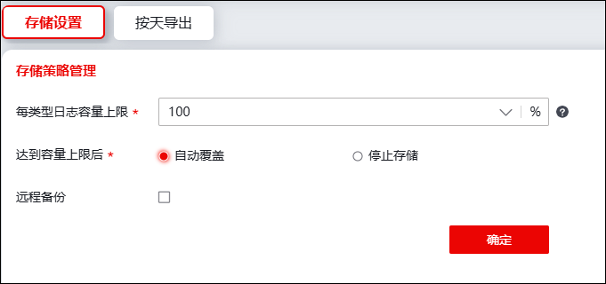
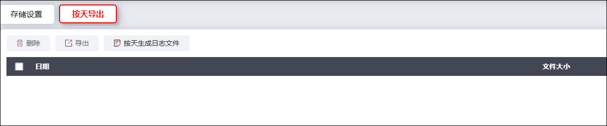

NGFW支持设置日志存储容量上限及远程备份。具体操作如下：
l存储设置
选择 ，激活“存储设置”页签，如下图所示。

各项参数的具体说明如下表所示。
参数 |
说明 |
|
|---|---|---|
存储策略管理 |
每类型日志容量上限 |
设置占每类日志预置容量的百分比。默认每种日志类型的日志容量为2048M。 |
达到容量上限后 |
当容量达到设置上限百分比后选择自动覆盖之前的日志或停止存储日志。 |
|
远程备份 |
勾选远程备份，需要进行以下配置。 |
|
备份周期 |
设置备份周期，可选择每日备份或每周备份。 |
|
生效时间 |
选择每周备份，需设置指定备份周期。 |
|
时间 |
设置备份当天的具体时间精确的时分秒。 |
|
备份的日志属性设置 |
日志文件类型 |
设置备份日志文件类型，可选择：CSV、TXT。 |
日志编码格式 |
设置备份日志编码格式。可选择：GB2312、UTF-8。 |
|
日志时间显示为 |
设置备份日志显示时间。可选择本地时间、UTC时间。UTC时间为协调世界时，又称世界统一时间。 |
|
备份后清空 |
设置备份后是否清空系统日志。 |
|
备份语言 |
设置备份日志的语言。可选择：中文、英文。 |
|
加密 |
勾选加密。 |
|
秘钥 |
设置备份日志属性的加密秘钥。 |
|
备份到FTP服务器设置 |
服务器地址 |
设置备份日志服务器地址。 |
用户名 |
当选择备份日志服务器类型为ftp服务器时，需设置服务器的用户名。 |
|
密码 |
当选择备份日志服务器类型为ftp服务器时，需设置服务器的密码。 |
|
配置完成，点击【确定】即可生效。
l按天导出
选择 ，激活“按天导出”页签。
1）点击【按天生成日志文件】，日志信息将展示在下方日志列表中，如下图所示。

2）勾选指定日志，点击【删除/导出】按钮，可执行对应操作。